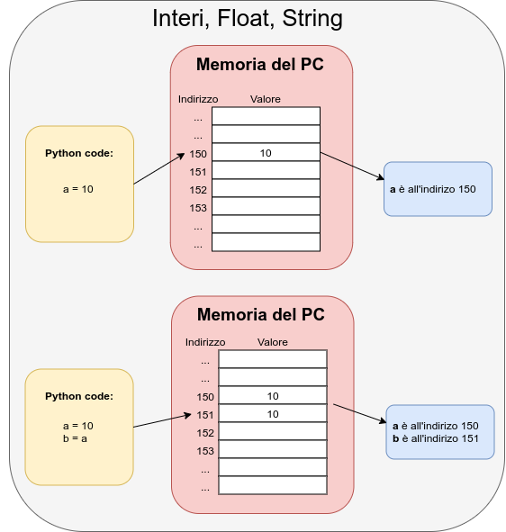
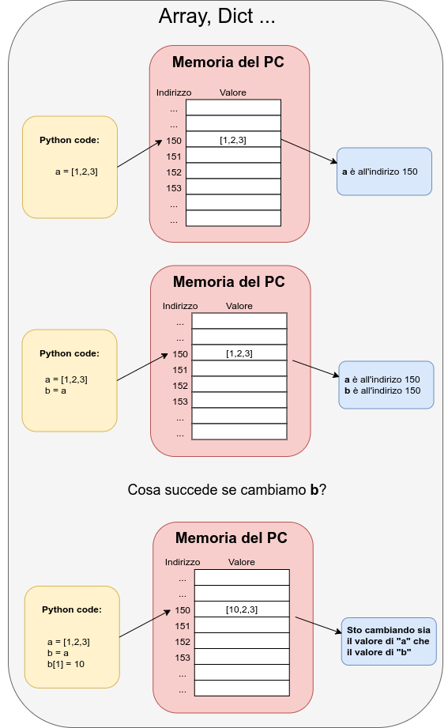

Python: Fondamentali¶
Interprete¶
Python si riferisce a:
- il linguaggio Python, un insieme di regole sintattiche e semantiche che definiscono il comportamento di un programma scritto in Python.
- l’interprete
python, un comando eseguibile dalla shell che permette di eseguire codice scritto nel linguaggio Python.
Per far partire l’interprete, da una shell scrivete:
python3
Vi apparira’ una schermata di testo simile a questa:
Python 3.X.X (default, Sep 14 2017, 22:51:06)
[GCC 5.4.0 20160609] on linux
Type "help", "copyright", "credits" or "license" for more information.
>>>
Per eseguire codice python, scrivetelo nell’interprete e date invio, ad esempio:
print("hello, world!")
Per chiudere l’interprete, premete Control-d in una riga vuota.
Tipi¶
Ogni oggetto Python contiene dei dati, questi dati hanno un tipo (un intero, una stringa, una lista, etc.) sui cui operiamo in qualche modo.
I tipi fondamentali sono:
| Tipo | Significato | Valori |
|---|---|---|
bool |
Condizioni | True, False |
int |
Interi | \{-2^{-31},\ldots,2^{31}-1\} |
float |
Razionali | \mathbb{Q} |
str |
Testo | Testo |
list |
Sequenze | Li vedremo più avanti nel corso |
tuple |
Sequenze | Li vedremo più avanti nel corso |
dict |
Mappe | Li vedremo più avanti nel corso |
set |
Insiemi | Li vedremo più avanti nel corso |
Il comando “type()” restituisce il tipo di un oggetto.
Hint
Nei vari esempi che mostrerò, un comando verra mostrato così:
print("ciao")
L’output verra mostrato così:
>> ciao
Aprite un terminale, e digitate:
python3
Provate i seguenti comandi:
type(1)
>> class 'int'
type("ciao")
>> class 'str'
type(1.0)
>> class 'float'
Primi passi con l’interprete¶
Aprite un terminale, e digitate:
python3
Provate i seguenti comandi:
5 + 3
8 / 2
52 * 8
10 % 3
"Ciao" + "come va?"
Tutto molto bello, ma poco utile! Come possiamo fare a memorizzare i risultati… con le Variabili
Variabili¶
Le variabili sono contenitori di riferimenti ad oggetti. Possono essere viste come nomi per gli oggetti a cui si riferiscono.
Perche dico riferimenti?
nel caso di Stringe Interi Float Boolean …
{kind=link}
nel caso di strutture un po’ più complesse
{kind=link}
Un oggetto viene assegnato ad una variabile con =:
pi = 3.1415926536
Qui la variabile di nome pi si riferisce all’oggetto 3.1415926536 di
tipo float. In sostanza abbiamo deciso che pi e’ un nome per l’oggetto
3.1415926536.
Warning
Il nome della variabile e’ arbitrario!
Lo decidiamo noi in modo che sia conveniente: breve, descrittivo degli oggetti a cui si riferisce, indicativo del ruolo che la variabile svolge nel nostro codice, etc.
Il tipo di una variabile e’ il tipo dell’oggetto a cui si riferisce. Ne segue
che il tipo di pi e’ float.
Warning
La variabile non contiene l’oggetto, ma un riferimento a quell’oggetto.
Per stampare il valore di una variabile, uso la funzione print:
variabile = "sono una esempio"
print(variabile)
Per stampare il tipo di una variabile, uso la funzione type:
variabile = "sono un esempio"
print(type(variabile))
Esempio. Creo una nuova variabile var:
var = 123
Il nome di var e’ var, il suo valore e’ 123, il suo tipo e’ int.
Esempio. Una variabile puo’ essere assignata piu’ volte:
var = 1
var = "MANLFKLGAENIFLGRKAATKEEAIRF"
var = 3.1415926536
Il nome della variabile resta sempre lo stesso, ma tipo e valore cambiano ad
ogni passaggio: controlla con print(var) e print(type(var)).
Documentazione¶
Per visualizzare l’aiuto di un tipo/oggetto/variabile, usa la funzione help,
ad esempio:
help(123)
visualizza l’aiuto degli interi, cioe’ del tipo dell’oggetto 123. Avrei
ottenuto lo stesso risultato con:
x = 123
help(x)
o:
help(int)
L’aiuto si usa come il manuale della shell: posso navigare l’aiuto con le
frecce, cercare un termine con /, e chiudere l’aiuto con q.
Esercizio insieme¶
Calcola il Body Mass Index BMI, prendendo in input peso(kg) ed altezza(m). Usando la seguente formula
BMI = peso / (altezza * altezza)
definiamo le variabili peso e altezza:
peso = 70
altezza = 1.75
calcoliamo il BMI e mettiamolo in una variabile:
BMI = peso / (altezza * altezza)
stampiamo il BMI:
print("il suo BMI è ",BMI)
Esercizi¶
- Calcola il perimetro di un triangolo, con i seguenti lati lato1 = 10,lato2 = 20, lato3 = 50
- Prendi tre variabili di tipo stringa e stampa la loro somma(+).
- Riscrivi il programma per calcolare il BMI e stampa il tipo di peso, altezza e BMI.
- Cerca il metodo split nella documentazione del tipo string (str), successivamente utilizza lo split sulla variabile prova di tipo str contenente “Ciao Come va? Io sto bene” con separatore (sep) = ” “
Soluzioni¶
Calcola il perimetro di un triangolo, con i seguenti lati lato1 = 10,lato2 = 20, lato3 = 50:
lato1 = 10 lato2 = 20 lato3 = 50 perimetro = lato1 + lato2 + lato3 print("Il perimetro è: ",perimetro)
Prendi tre variabili di tipo stringa e stampa la loro somma(+).:
stringa1 = "ciao " stringa2 = "come ti chiami" stringa3 = "?" sum = stringa1 + stringa2 + stringa3 pritn("la concatenazione di:") pritn(stringa1,stringa2,stringa3) print("è ugauale a:", sum)
Riscrivi il programma per calcolare il BMI e stampa il tipo di peso, altezza e BMI.:
peso = 60 altezza = 100
BMI = peso / (altezza * altezza)
print(“il type di peso è”,type(peso)) print(“il type di altezza è”,type(altezza)) print(“il type di BMI è”,type(BMI))
Cerca il metodo split nella documentazione del tipo string (str), successivamente utilizza lo split sulla variabile prova di tipo str contenente “Ciao Come va? Io sto bene” con separatore (sep) = ” “:
help(str) # premi / per cercare # cerca "split" # leggi come utilizzare lo split prova = "Ciao Come va? Io sto bene" print(prova.split(sep=" ")) >>> ["Ciao","Come","va?","Io","sto","bene"]